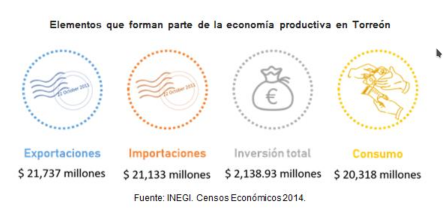
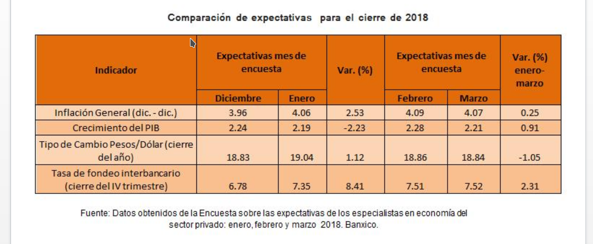

La reforma fiscal que entró en vigor en enero de este año bajo el gobierno de Donald Trump en los Estados Unidos, es un tema de carácter nacional y de impacto en el ámbito fiscal y económico por los efectos que reflejará en todo el país. Esta reforma tiene como objetivos: motivar el traslado de empresas a EUA, desalentar la inversión en otros países, y recibir en mayor medida inversiones y flujos de capital a través de diversas disposiciones.
La reforma ha generado incertidumbre en mercados y empresarios en los últimos meses, ¿Cuáles serán las implicaciones para México y la ZML?.
A pesar de la desinversión a largo plazo para nuestro país, los resultados serán positivos al corto plazo, pues se espera que al crecer la actividad económica de EUA, crezca proporcionalmente la nuestra. Exportaciones, importaciones, inversión total y consumo, son algunos componentes del PIB que se verán afectados. En el gráfico se muestran los montos que tiene la ZML para cada componente de acuerdo a Censos Económicos 2014.
Las expectativas que el sector privado tenía en diciembre de 2017 para este 2018 sobre algunos indicadores económicos de México, aún no reflejaban la aprobación de la reforma fiscal, que ocurrió en enero; pronosticando, por ejemplo un incremento moderado al alza para la tasa interbancaria o el costo del dinero establecido para los préstamos entre bancos, dato que es de importancia pues es un referente para ubicar el costo de los diferentes tipos de créditos que otorga el sistema bancario a sus clientes. Después de la reforma, en la encuesta realizada en enero, ésta y otras expectativas cambiaron notablemente.
Con la disminución en las tasas de impuestos de EUA y el aumento en los sueldos de los trabajadores; el consumo se ve incrementado, lo que lleva al crecimiento de la inflación en ambos países; por esto, la expectativa de este indicador ascendió a 4.06% en enero. En febrero de este año, Banxico anunció el incremento en su tasa de interés con la finalidad de alcanzar su inflación objetivo, esta tasa asciende a 7.50%, lo cual concuerda con las expectativas al alza tanto de la inflación como de la tasa de fondeo interbancario. Si bien el costo de los créditos se hace más caro, la tasa de interés se mantiene atractiva para los inversionistas ofreciendo inversiones con mejores rendimientos. El aumento de la tasa también coloca al tipo de cambio con presiones al alza.
Exigencias a las autoridades fiscales
En respuesta a la reforma fiscal, en el foro: “Perspectivas Económicas y Fiscales 2018”, convocado por el Instituto Mexicano de Contadores Públicos de La Laguna en el mes de enero; se mencionaron acciones que la Secretaría de Hacienda podría emprender en México con la finalidad de mantener las tasas de impuestos a un nivel competitivo y atractivo para las industrias. Entre estas medidas:
Recortar el pago de impuestos a las corporaciones, aumentando al 100% el límite de sueldos y salarios que pueden descontarse para el cálculo del impuesto empresarial.
Eliminar el impuesto en la repartición de utilidades a los accionistas, el cual es del 10% actualmente.
Extender la fecha límite para regresar a México las inversiones y ganancias que se han tenido en el extranjero por las que no se han pagado impuestos, sin penalizaciones y a una tasa baja.
Incrementar la recaudación de impuestos por consumo, homologando el I.V.A. y el I.E.P.S.
Recomendaciones para la ZML
Independientemente de las acciones que tome la Secretaría de Hacienda, ¿qué podemos hacer nosotros para aminorar los efectos negativos en nuestros negocios?
Dados los efectos que se verán en toda la nación, éstas son algunas recomendaciones:
Hacer proyecciones de las finanzas de los negocios para evaluar el posible impacto de la reforma.
Contratar coberturas cambiarias, que funcionan como seguros para amortiguar la posible depreciación en el tipo de cambio, y con ello evitar gastos no planeados.
Verificar y adelantar los contratos de crédito previstos y otros gastos en moneda extranjera.
Revisar las oportunidades que proveedores locales y extranjeros, alternativos a los de EUA, pudieran ofrecer; para subsanar los efectos de la depreciación del peso frente al dólar.
Dejando a un lado las reformas propuestas, ¿qué proyectos está implementando ya el gobierno para desarrollar la competitividad fiscal de México?
Existen tres instrumentos que podrían ayudar a retener o aumentar las inversiones en México: a nivel federal, están las Zonas Económicas Especiales y el decreto que permite la repatriación de bienes a una tasa baja; y a nivel regional, el Proyecto de Política Industrial desarrollado por el IMPLAN.
El proyecto Zonas Económicas Especiales implementado en 2017 por la Secretaría de Economía, ha buscado detonar el desarrollo económico empezando por las zonas marginadas del país al reducir la carga de impuestos para las empresas que se instalen en ciertos territorios; en cuanto a la repatriación de bienes, se pretende que las inversiones y ganancias en paraísos fiscales vuelva a territorio Nacional.
A nivel de Zona Metropolitana, el Proyecto de Política Industrial que propone el IMPLAN, tiene como objetivo fomentar la competitividad y la maduración plena de las industrias con mayor potencialidad para generar beneficios a la comunidad lagunera; albergando incentivos como: fiscales, subsidios, aprovechamientos exclusivos, así como facilitar trámites y procurar fondos.
Principales puntos:
● Cambiar a una tasa de impuestos corporativa más competitiva: 21% en EUA vs 30% en México.
● Prohibir el descuento de los impuestos pagados en otro país, del cálculo de impuestos a pagar en EUA.
● Eliminar el pago de impuestos en la repartición de utilidades a accionistas
● Atraer inversiones y ganancias de Estadounidenses, localizada en paraísos fiscales y no reportadas a EUA; gracias a la baja tasa impositiva de 15.5% para ganancias y 8.5% para activos.

Tabla
